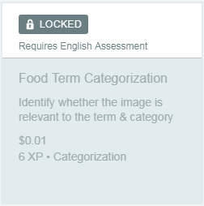
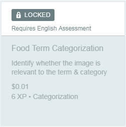

Algemene voorwaarden
Om problemen te voorkomen door onwetendheid van de Spare5-regels, willen we uitleggen wat volgens ons het belangrijkste is dat in de voorwaarden van dit platform wordt genoemd; als u meer inzicht wilt krijgen in de voorwaarden van de service van Spare5, kunt u zich aansluiten op de volgende link:Algemene voorwaarden.

Van de belangrijkste problemen in de voorwaarden van Spare5 is de beperking dat u alleen een enkel account kunt maken, ook vermeld dat u niet meer dan één account kunt gebruiken en dat geen andere dan u taken kan uitvoeren die zijn toegewezen aan u.

Een ander aspect dat betrekking heeft op de servicevoorwaarden van Spare5 gaat over prestatiebetalingen op taken, waarbij u vermeldt dat als u een taak zeer laag uitvoert, als u een taak onvolledig achterlaat, als u het niet uitvoert met onvoldoende kwaliteit, of Als u de richtlijnen van de gemeenschap anders schendt, betaalt u die taak niet en wat u in deze taak hebt gedaan, wordt u niet beloond met de betreffende betaling. Het wordt ook vermeld dat Spare5 de transactiekosten voor PayPal niet uitvoert, hoewel dit probleem in dit geval niet meer belangrijk is omdat PayPal voor deze transacties geen commissie vraagt.
Het vermeldt ook dat, als er een rechtszaak is ingesteld tegen Spare5 die u installeert, moet u alle kosten van advocaten, vertegenwoordigers, verliezen, schadevergoedingen, proeven en andere procedures dragen die noodzakelijk zijn in die situatie, zolang de vordering is basis van een van de volgende:
Deel vier van de Algemene Voorwaarden van Spare5-
i. Eventuele daadwerkelijke of vermoedelijke belemmering van uw verplichtingen met Spare5, die zijn vastgelegd in de overeenkomst waarover wij omgaan, dat wil zeggen in de algemene voorwaarden.
ii. De resultaten van uw taken, die u onvolledig hebben verlaten of niet met voldoende kwaliteit hebben uitgevoerd om betaling te verdienen.
iii. Niet-naleving van wetten en voorschriften die van toepassing zijn op het gebruik van de door Spare5 geleverde diensten.

Spare5 kan u waarschuwen, tijdelijk of permanent opschorten van uw account of een taak als u een van de volgende handelingen doet:
-
i. Niet voldoen aan het beleid van Spare5 of de algemene voorwaarden.
ii. Spare5 detecteert dat de door u verstrekte informatie onjuist is.
iii. Spare5 is van oordeel dat uw handelingen juridische problemen kunnen veroorzaken op dit platform of op een of andere klant van het web of illegale activiteiten met zich meebrengen.


 
